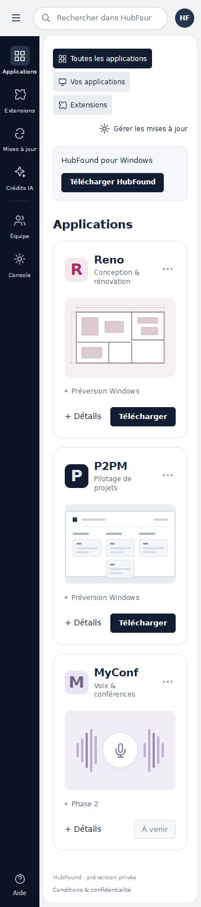

Une suite, des usages distincts
Le catalogue et les services communs évitent de refaire la gestion des accès pour chaque produit. Reno conserve ses outils de plan et de visualisation ; P2PM conserve ses registres, relations et documents.
PROJET PERSONNEL · Applications web
HubFound réunit Reno et P2PM dans un même catalogue, avec une première préversion Windows et des services de compte et d’IA hébergés en Suisse. Je développe aussi une préproduction web privée pour tester les dernières évolutions sans installation, tout en conservant les projets sur l’appareil de l’utilisateur.

Cliquez sur la capture pour l’agrandir. Interface affichée en français.
HubFound est le point d’entrée commun de mes applications. Reno accompagne la conception et l’aménagement d’un espace ; P2PM organise le cadrage, les acteurs, les décisions, les actions et les documents d’un projet. MyConf reste visible dans le catalogue, son installation depuis HubFound étant prévue ultérieurement. Le hub simplifie l’accès aux produits ; chaque application conserve son interface et ses outils métier.
Le catalogue présente des vignettes par produit. La recherche et les filtres facilitent l’accès ; les explications détaillées restent derrière une action dédiée.
La première préversion Windows installe Reno et P2PM depuis le hub. Chaque logiciel possède sa fenêtre et ses raccourcis, sans barre de navigateur. Electron permet de conserver les interfaces web existantes dans ce cadre desktop.
Les projets et leurs pièces restent sur l’appareil. Reno utilise le suffixe .renov.proj et P2PM le suffixe .p2pm.proj. Le compte commun identifie la personne et ses accès ; il ne synchronise pas ses projets entre ordinateurs.
Dans P2PM, la demande peut s’appuyer sur la conversation, des fiches et des documents choisis. L’assistant conseille et propose des changements ; leur application suit la validation de l’utilisateur ou une autorisation de complétion explicite pour cette demande.
Le catalogue et les services communs évitent de refaire la gestion des accès pour chaque produit. Reno conserve ses outils de plan et de visualisation ; P2PM conserve ses registres, relations et documents.
L’assistant P2PM ne se limite pas à une réponse textuelle : il prépare des modifications structurées, avec une destination et des valeurs avant/après. Le moteur local contrôle les droits, les relations et les conflits avant l’écriture, et peut refuser une annulation qui écraserait un travail ultérieur.
Le serveur gère l’identité, les autorisations et la consommation IA. Le contenu métier demeure local, hormis les éléments autorisés pour une demande IA. Le dessin manuel d’un contour dans Reno est déterministe et ne nécessite aucun appel IA.
Exemple : le parcours d’une demande dans P2PM. Les interfaces, les services de plateforme et le fournisseur IA ont des responsabilités séparées.
Projet, documents et conversation sont préparés dans P2PM. L’extraction et le filtre local produisent le contexte de la demande.
La session, l’accès à l’application et le budget disponible sont contrôlés. Une réservation précède l’appel au fournisseur ; la clé ne quitte pas le serveur.
Le résultat est validé. P2PM rétablit localement les identités autorisées, affiche les propositions et garde l’historique dans le projet.
Le registre de consommation évite de relancer une même opération par simple rechargement. Une issue incertaine conserve sa réservation jusqu’au rapprochement, au lieu d’être considérée à tort comme un échec gratuit.
P2PM exécute le modèle YalenLabs/yalen-pii-ner-multilingual avec ONNX Runtime et WebAssembly sur CPU. Il recherche des personnes, organisations et lieux. Des règles complémentaires traitent les coordonnées et identifiants, les fiches connues et les mentions choisies avec @.
Les éléments reconnus sont remplacés par des alias opaques avant l’envoi. La correspondance reste locale et permet une réponse lisible dans l’application. Les homonymes ne sont pas fusionnés arbitrairement ; un aperçu permet de contrôler le contenu préparé.
Le coffre utilise AES-GCM et des portées distinctes par compte et projet. Il protège les correspondances réversibles ; il ne rend pas toutes les données du projet anonymes et ne constitue pas un chiffrement complet du profil web.
L’OCR Tesseract français/anglais et l’extraction PDF, Word ou Excel s’exécutent également localement dans P2PM. L’original documentaire n’est pas envoyé comme solution de repli si l’extraction échoue. Le modèle de reconnaissance peut manquer un nom ou masquer un terme métier : la relecture reste nécessaire et l’envoi est refusé si le filtre est indisponible.
J’ai retenu Infomaniak pour héberger les services communs en Suisse et disposer d’un environnement que je peux administrer et restaurer. L’API privée fonctionne dans des conteneurs Docker sur Ubuntu ; Caddy assure l’accès HTTPS. Les données de compte et le registre de consommation sont conservés en SQLite.
Les données de plateforme font l’objet d’archives chiffrées transférées vers Swiss Backup avec Restic. La procédure vérifie aussi une restauration isolée. Elle sert à retrouver les comptes, les autorisations et la comptabilité des demandes ; elle ne collecte pas les projets des utilisateurs.
Les projets locaux ont leur propre parcours d’export. La version web en préparation ajoute des archives portables protégées par une phrase de récupération. Ces formats web restent distincts des versions Windows actuelles ; effacer le stockage du navigateur peut supprimer les travaux qui n’ont pas été exportés.
La localisation suisse des services HubFound ne signifie pas que tous les traitements du fournisseur IA ont lieu en Suisse. La préproduction web est conçue avec ses propres comptes, sessions, base et secrets applicatifs ; son activation externe reste à réaliser.
Je traduis les demandes en modifications limitées, dans les copies de travail du hub et des applications. Les sources et les décisions de version restent distinctes des profils utilisateurs.
Les tests couvrent notamment les droits, les budgets, les fichiers, les changements de compte, la géométrie Reno et l’application contrôlée des propositions P2PM. Des essais visuels complètent ces vérifications.
Les builds utilisent des dépendances verrouillées et des inventaires de fichiers. Pour Electron, les contrôles portent sur les archives ASAR, leurs empreintes, l’isolation du renderer et l’absence de clés fournisseurs dans les paquets.
Une recette privée précède la publication stable. Les mises à jour du serveur conservent une image précédente pour retour arrière. Le parcours complet de mise à jour desktop avec consentement et redémarrage reste à finaliser avant la distribution stable.
L’atelier de développement peut fonctionner sur des données fictives avec une réponse distante simulée et de vrais moteurs locaux. L’intégration authentifiée et la recette d’un installateur sont des étapes séparées : une démonstration locale n’est pas présentée comme une publication.
Point d’étape au 27 novembre 2026. Les fonctions évoluent par lots ; une ancienne préversion installable ne contient pas automatiquement les dernières améliorations.
HubFound est encore en préversion privée. Les dernières versions web ne sont pas publiées pour les testeurs externes. La signature Windows, macOS, l’installation de MyConf, la facturation et les parcours entreprise complets restent à finaliser. Les contrôles locaux réduisent l’exposition d’informations sensibles sans garantir une détection parfaite.
Je conçois et développe HubFound avec assistance IA dans Codex : expérience du catalogue, portage des applications, stockage local, comptes, passerelle IA, déploiement et sauvegardes. Je relie les décisions produit à leur mise en œuvre, puis je vérifie les parcours par des tests et des essais dans les applications.
Transformer plusieurs projets indépendants en une suite cohérente : retrouver ses applications et ses accès, garder ses documents localement, puis faire évoluer chaque produit avec un parcours de test et de publication maîtrisé.